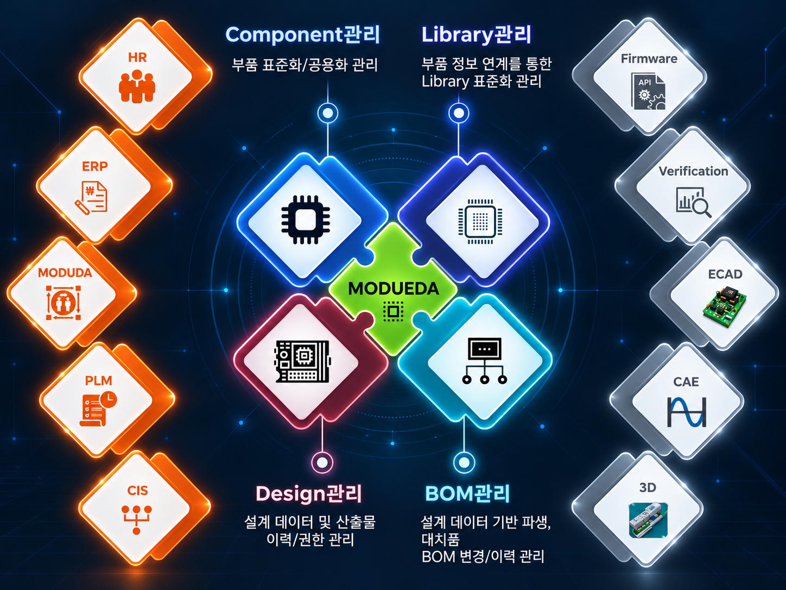
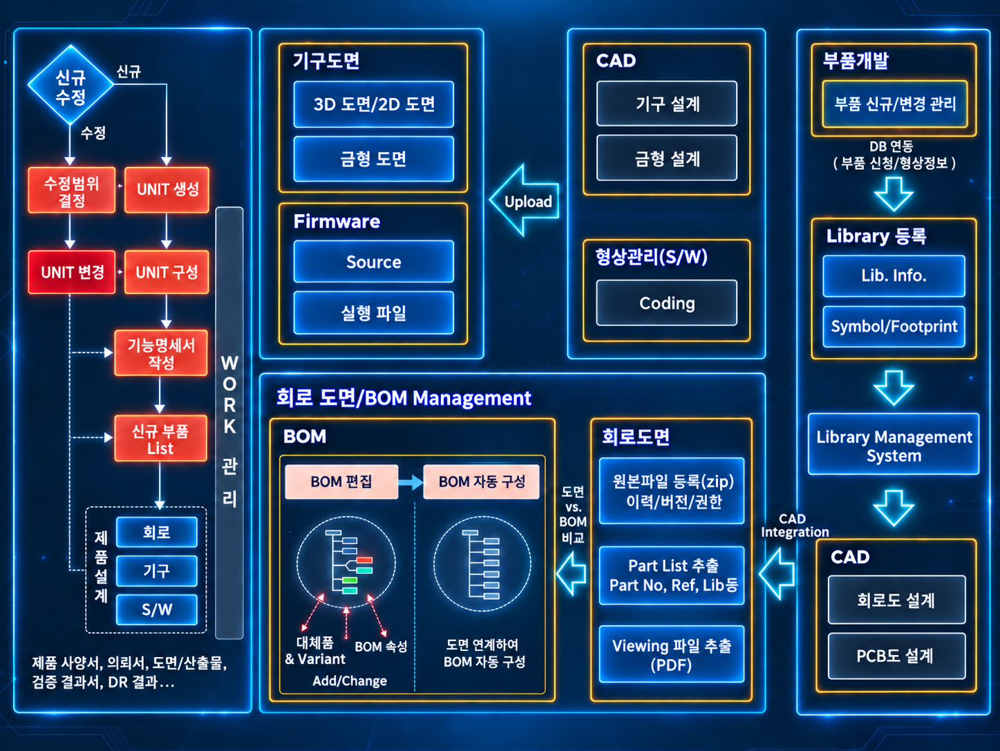

MODU EDA 부품 · Library · 설계 데이터 · BOM 통합 관리
Workflow 기반으로 부품정보, Library 정보, 설계데이터 및 산출물, BOM을
하나의 흐름으로연결하여 설계와 제품 관리의 효율을 높이는 통합 업무 환경을 제공합니다.
부품, Library, 설계데이터, 산출물, BOM을 일관된 흐름으로 연결
하나의 WorkSpace에서 핵심 설계 데이터를 한 곳에 관리하는 구조
설계상의 문제점을 사전에 예방하고 적용 가능한 시스템 기반 환경 제공
설계 아이디어부터 도면·검증·표준 준수까지 AI가 능동적으로 보조
핵심 기능
제품 설계와 관련된 주요 데이터를 중심으로, 설계 운영에 필요한 관리 포인트를 하나의 체계로 정리합니다.
부품 정보 관리
제품 구성에 필요한 부품 정보를 체계적으로 관리하여 설계 기준과 참조 정보를 정확하게 유지합니다.
Library 및 설계 데이터 관리
Library 정보 및 설계데이터를 연결하여 일관성과 활용성을 높이고 설계 자산의 재사용 기반을 강화합니다.
BOM 및 산출물 통합
BOM과 각종 산출물을 함께 관리하여 설계 결과물의 정합성을 높이고 과 추적을 쉽게 합니다.
통합 관리를 위한 기반 기능
WorkSpace 통합
설계 관련 주요 데이터를 한 공간에서 확인하고 관리할 수 있습니다.
단위 기반 관리
Library, 도면의 생성 단계부터 단위 기반으로 제품 설계의 흐름을 체계적으로 연결합니다.
도면/BOM 연계
도면과 BOM을 분리하지 않고 하나의 관리 흐름으로 다룹니다.
Document 관리
설계 데이터와 연관된 문서들을 함께 관리하여 업무의 연속성을 높입니다.
차세대 AI EDA 어시스턴트
MODU EDA는 데이터 관리를 넘어, AI로 설계 초기 구상부터 회로 검증 및 규격 추적까지의 복잡한 엔지니어링 과정을 지원합니다.
자율형 라이브러리 모델링 & 검증
부품 속성과 데이터 시트를 스스로 해석하여 중립 라이브러리 모델을 생성하고, 기존 시스템과의 정합성을 검증하여 설계 오류를 초기에 방지합니다.
아이디어 기반 회로구조 자동 추천
간단한 구상이나 스케치, 논리적 설명만으로 AI가 주요 회로 블록의 초안을 구성하며, 필요한 주변 요소를 지능적으로 보완합니다.
도면 변경 요약 및 리스크 사전 분석
이전 버전과의 차이를 자동 요약하여 설계 변경을 준비하고, 과거의 실패 사례 및 규격 제약 요소를 AI가 사전 검토하여 리스크를 확인합니다.
국제 표준 규격 및 산출물 자동 모니터링
개발 과제에 요구되는 표준 인증 절차와 전자설계 요구사항을 AI가 자동으로 추적·알림하여, 단계별 필요 산출물이 누락되지 않도록 미리 준비합니다.
통합 관리 흐름
MODU EDA는 설계에 필요한 모든 데이터를 한 곳에 연결하여, 보다 일관된 제품 관리 프로세스를 구성할 수 있도록 돕습니다.


하나의 WorkSpace 중심
하나의 WorkSpace 안에서 부품 관리, Library 관리, 도면/BOM 관리, Document 관리까지 이어지도록 구성되어 모든 데이터가 한 곳에서 관리되는 제품 관리 환경을 구현합니다.
관리 프로세스
-
1
STEP 1
단위 생성 단계에서 설계 관리의 시작점을 정의합니다.
-
2
STEP 2
부품 및 Library 정보를 연결하여 설계 기준 데이터를 체계화합니다.
-
3
STEP 3
도면, BOM, 설계데이터 및 산출물을 통합하여 일관된 추적 구조를 형성합니다.
-
4
STEP 4
모든 Data를 한 곳에서 관리하여 설계상의 문제점 예방과 적용성을 높입니다.
기대 효과
설계와 제품 관리에 필요한 데이터를 통합함으로써 업무 효율, 관리 일관성, 문제 예방 역량을 높일 수 있습니다.
관리 효율 향상
- 부품, Library, 설계데이터, BOM을 분산 없이 관리할 수 있습니다.
- 업무 흐름에 필요한 핵심 데이터를 한 곳에서 확인하여 관리 시간을 줄입니다.
- 제품 개발 관련 산출물의 연결성을 높여 운영 효율을 강화합니다.
설계 품질 기반 강화
- 도면/BOM/Document 관리가 하나의 체계로 이어져 정합성 확보에 유리합니다.
- 설계상의 문제점 예방을 지원하는 시스템 기반 관리 환경을 제공합니다.
- 적용 가능한 제품 관리 구조를 통해 지속적인 설계 운영 기반을 마련할 수 있습니다.
MODU EDA는 부품, Library, 설계데이터, 산출물, BOM 등 모든 연관자료를 하나의 WorkSpace와 Workflow로 연결하는 EDA 통합 관리 솔루션입니다.